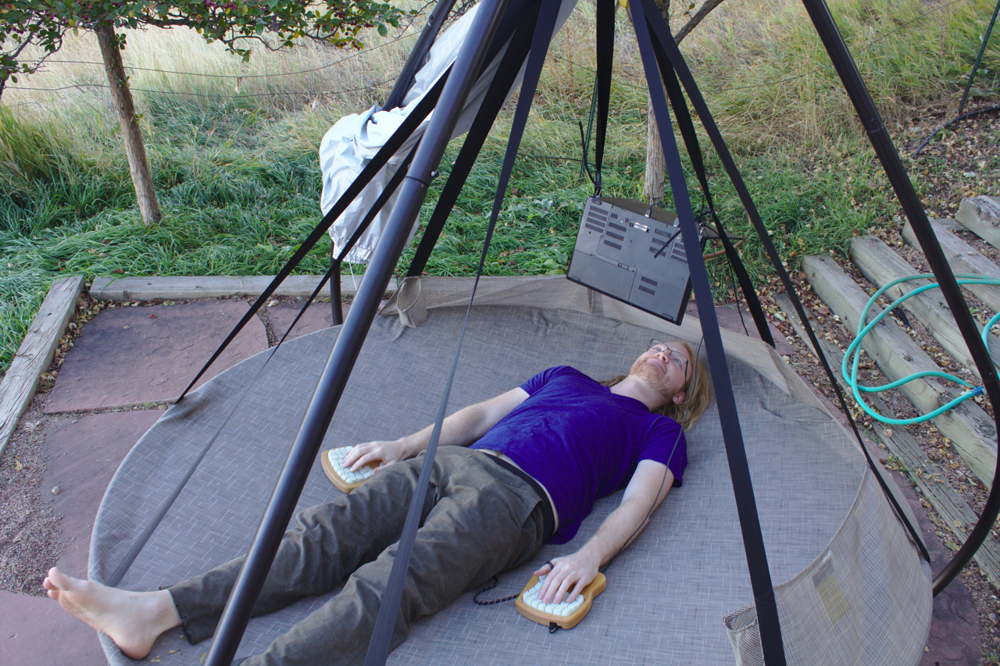

Supine Computing
A few months ago, I pulled a muscle in my lower back, by rock climbing after doing lots of back-bends and handstand practice. I quickly went from feeling fairly nimble to hobbling around with limited mobility and an inability to sit at a desk. Argh!
Happily, I was prepared with some very comfortable and ergonomic1 ways to use the computer while laying down (supine). After about a week of doing this and phasing in some exercise, I could finally stand up straight again!
This post describes variations on supine computing – what's worked best for me so far.
Hammock Computing!
The best variety of supine computing is in a hammock! Here is a photo from summer of 2018:

This is highly ergonomic – most joints are in quite neutral positions. In particular, your neck can be fully relaxed because the screen is above your head.
In the photo above, the laptop is suspended via releasable zip ties$ threaded through a nice strap that came with some gymnastic rings. Ratchet straps are even better for this purpose, as they have a builtin way to tension them. In the photo below, a ratchet strap is tensioned from one end of the hammock stand to the other:
In this case, zip ties are attaching to little wire loops wrapped around the laptop's hinges. Loops like this, or carabiners, are not necessary but they are a bit more convenient. With most ThinkPad laptops, and likely many other brands, its possible to thread the zip ties through between the body and screen or at the hinges. Here's a more recent picture showing this:
I find that ThinkPads are more than sturdy enough to be suspended by their hinges. Sometimes I'll have the full weight on one hinge, while attaching the other. Please use your best judgment about what your laptop can handle2.
Not just for hammocks
This is probably obvious, but supine computing is not just for hammocks! It's great for computing anywhere you can lay down. Since I also want to encourage computing outdoors and hammocking, all of the photos below will involve a "flying saucer" hammock$.
Laziest approach: pillows (but poor ergonomics)
This approach can be quite convenient for short sessions:
Using a Kinesis Advantage 2$ keyboard works quite well in this posture, since there is a good amount of space between your hands. This might not be viable with other types of keyboards, but certainly worth a try.
The neck ergonomics are not ideal, though – doing extended sessions like this can cause neck soreness. So, please try to avoid that!
Much better: screen above head + split keyboard
Ideally, the screen would be above your head. Here, it's suspended via the same zip tie approach as above:

Another improvement in this picture is using a split keyboard. In this case it's a keyboard.io, but other split keyboards like the ErgoDox can work great too. By placing the keyboard halves to either side, your arms can be in a more relaxed position.
This is much better than the prior supine posture. It doesn't seem to put much strain anywhere, and so is quite viable for extended computing sessions. It's also quite simple – split keyboard to either side, and screen above your head.
Other suspension methods
There are a huge variety of other ways to suspend a horizontal display above you. Pretty much any well anchored rope or strap will support the zip-ties-around-hinges approach. Here are a few more suspension ideas:
Simply screw hooks into a strut in the ceiling.
Suction cups$ worked surprisingly well when I tried them, but only on smooth ceilings.
3M Command Hooks$ work well on walls and slanted ceilings, but not well on flat ceilings, as they are not very strong perpendicular to the surface. It might be sufficient for lightweight laptops / tablets.
There are also a variety of laptop stands$ intended for bed use. The only one I've personally used is the MagicHold Laptop stand$, which I mostly use for reclined computing. Like nearly all of these stands, their intended use does not involve the screen being entirely horizontal. For the MagicHold stand, the usual zip tie configuration can be used. I suspect for many of the stands, more direct attachment of the laptop could allow them to be used for fully horizontal supine computing.
Other supine approaches
I have a vague recollection from around ten years ago of Timothy Hobbs sharing a photo of supine computing on some freenode IRC channel, with a DataHand split keyboard and a screen suspended above his head via a cardboard box. I googled for "timthelion data hands" and came across a post from 2008 which ends with a more evolved version of his supine computing setup, which appears to be using a desk to support the monitor. It looks like more recently he's also had some interesting adventures in outdoor wearable computing.
After deciding to call this post "Supine Computing", I googled that phrase and came across a post by Justin Craig-Kuhn, titled "DIY Supine Workstation". He kindly gave me permission to reuse his photo here:
Cool stuff!! A couple notes on this:
He's using an ipad as a screen along with a gooseneck tablet mount. This has nice adjustability, and is more elegant than putting a full laptop there. However, as he points out, using an IPad as a display adds some lag, about 20ms.
The keyboard position may well be better than mine, because each half is oriented vertically. This allows forearm rotation to be in the middle of its range rather than near its limit. I don't feel strain there, though, so I don't feel the need to do this.
There are a variety of expensive solutions for reclined / supine computing workstations. For example, the offerings from AltWork and ErgoQuest are quite visually dramatic:
While I find these workstations quite cool, right now I can't justify the expense and non-portability. I prefer approaches which are inexpensive, portable, and use commonly found materials, such that they are more easily shared.
Getting weird: upside down belay glasses
Alternatively, belay glasses can be used to allow your neck to be in a neutral position:

Specifically, these are clip on belay glasses$, which can be used while belaying someone rock climbing, to allow you to watch the climber without craning your neck. In this case, they are flipped upside down such that your vision is downwards. This actually works fairly well, but certainly looks quite strange.
I haven't found myself doing this much, likely due to the following reasons:
It can be a little finicky, though possible, to get the prisms oriented such that the screen is visible for both eyes. It's unpleasant for parts of the screen to be occluded for one eye.
When used outside, glare from the sky above can be more of a problem.
They induce some chromatic aberration, which can make text harder to read. This might be avoided by using a prism material with a lower refractive index.
Downsides of supine computing
Can be way too comfortable and relaxing, causing drowsiness. The best way to deal with this is to do a bit of exercise. A really good cycle is switching between a treadmill desk, standing, and supine computing.
You may find yourself using your computer in bed more frequently. I've read in a number of reputable places that it's good sleep hygiene to only use your bed for sleep and sex. So, if possible, please try to make your supine computing habit somewhere other than where you sleep.
Upsides of supine computing
Can allow you to comfortably use the computer when an injury might otherwise prevent it.
Is a great posture to include in a rotation of postures3. For example, I don't find it practical to stand or walk (on a treadmill desk) for the entire day. Mixing in some supine computing makes it entirely viable to avoid all sitting.
It's a great way to do some physical resting while still getting things done. Sometimes it's better to take a proper nap, but other times I find that I'm physically tired but mentally active – this is a great posture for those times.
Thanks for reading!
Thanks for reading this post, I hope some of you are inspired to try out supine computing, perhaps even outside! If you're dealing with back pain – argh – that sucks :( ! But I hope this approach helps you manage some of that, or at least work around it.
If you do experiment with this stuff, I'd be curious to see what you come up with! My email address is this site's hostname at gmail.com
Also, I'm working on more posts exploring other approaches, which I hope to publish in the next few weeks. See also my prior posts on reclined computing and airplane computing. If you're interested in this stuff, please check back in a while, or perhaps subscribe to my atom feed.
Footnotes
I am a hobbyist in ergonomics, I have no credentials related to ergonomics, nor have I studied much of the academic literature on the topic. Mostly, I've just followed my own intuition, sought what feels good, and avoided what causes pain. So please take my advice with a grain of salt, and perhaps experiment to see what works for you!↩︎
A couple years ago, I got in the habit of leaving zip ties threaded through the hinges of my laptop for convenience. This worked quite well, and I still sometimes do it. There is a potential danger to this, though – one evening I hastily closed my laptop onto a twisted zip tie, and that broke the screen. Argh! Thankfully, ThinkPads are relatively easy to repair, so I just put in a another screen.↩︎
I don't think there is one ideal ergonomic posture. It seems sensible to switch between a variety of decently ergonomic postures. This way, the particular stresses and strains of each posture are less likely to accumulate into disorder.↩︎
Some links are amazon affiliate links, which sometimes send me a bit of money when you make purchases after clicking them. The purpose of this blog is sharing information and ideas, not making money. But I figure I may as well add them, and I appreciate usage of them!